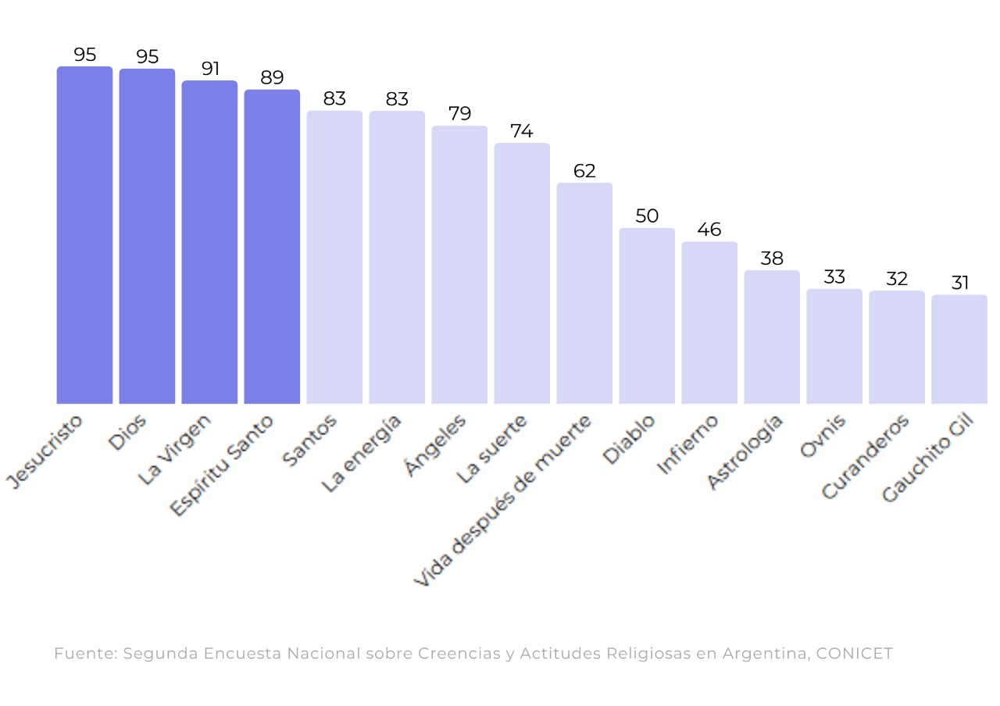
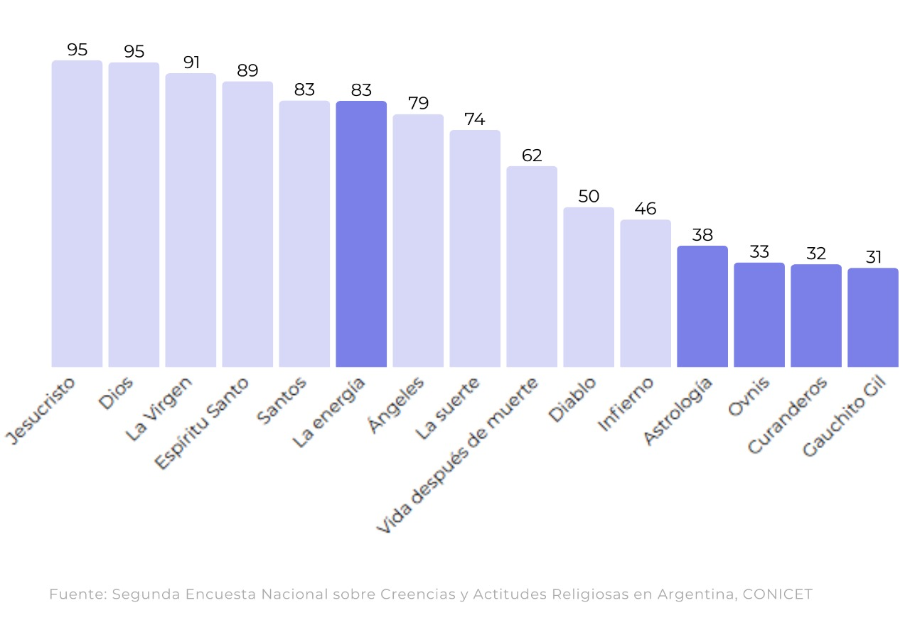

La transformación del paisaje religioso en la Argentina
Del predominio del catolicismo a la pluralización de creencias alternativas
De la hegemonía católica a la popularización de nuevas corrientes espirituales, la historia del catolicismo en Argentina se desarrolló en estrecha relación con la política y la sociedad. Hoy, se observa un cambio del panorama marcado por la diversidad y la transformación de tradiciones religiosas.
La Iglesia y el Estado a lo largo de la historia
La historia del catolicismo en la Argentina está estrechamente ligada al contexto político, social y cultural del país desde sus inicios. Desde la llegada de los españoles hasta los debates actuales sobre laicidad, la Iglesia Católica formó parte de la vida espiritual de la población y, al mismo tiempo, de los procesos políticos y sociales. Su influencia atravesó gobiernos, instituciones y costumbres, lo que hace que su declive resulte llamativo frente a su larga presencia en el país.
Según la Segunda Encuesta Nacional sobre Creencias y Actitudes Religiosas realizada por el CONICET en 2019, cerca del 63% de la población se declaraba católica, unas 30 millones de personas. Si bien esto es más de la mitad de los argentinos, hay un contraste con décadas anteriores. De acuerdo con el censo de 1947, el 93% de los habitantes del país eran católicos, y en 2008 el número todavía rondaba el 75%. La tendencia muestra que la identidad religiosa, antes casi uniforme, atraviesa hoy un proceso de diversificación.
Esta tendencia instala una pregunta: ¿Cómo se explica la pérdida de tantos fieles y el avance de otras creencias o posturas no religiosas? Para hacerlo, es necesario volver sobre los hitos que marcaron la relación entre Iglesia, Estado y sociedad, y analizar cómo esos cambios fueron modelando el paisaje religioso argentino.


La cantidad de personas que se identifican con el catolicismo ha disminuído de manera sostenida, lo que anticipa una pérdida de centralidad de la Iglesia en la vida social argentina. Las nuevas generaciones ya no heredan con la misma fuerza las prácticas religiosas de sus familias y, frente a las posturas firmes de la institución en temas como el divorcio, matrimonio igualitario o interrupción voluntaria del embarazo, optan por alejarse o combinar su fe con creencias alternativas.
A lo largo del siglo XX, hitos como la Reforma Universitaria de 1918, que consolidó un modelo de universidad laica, y el retorno de políticas religiosas tras el golpe de 1943, profundizaron los debates sociales y marcaron un quiebre entre la Iglesia y el Estado.
Según la Encuesta de opinión sobre religión, política y sexualidad realizada por la organización “Católicas por el derecho a decidir”, alrededor del 70% de las personas católicas están a favor del matrimonio entre personas del mismo sexo, el 65% está de acuerdo en que la mujer que recurre al aborto puede seguir siendo una buena creyente, y el 90% cree que las personas homosexuales pueden ser buenos creyentes.
Esto no solo redefine la vida religiosa, sino que también impacta en la arena política y cultural: la voz de la Iglesia pesa cada vez menos en el debate público de una sociedad que ubica a la autonomía individual y los derechos civiles por encima de los dogmas. Además, en la actualidad se ve obligada a convivir con una pluralidad de creencias y prácticas que configuran un nuevo mapa espiritual en el país.
El nuevo mapa espiritual de la Argentina
En paralelo al declive de la hegemonía católica, datos del CONICET muestran una transformación sostenida en el mapa religioso argentino. El crecimiento no se concentra en una sola confesión, sino que se dispersa entre evangélicos, testigos de Jehová, adventistas, mormones y, sobre todo, personas que dicen creer “a su manera” o no identificarse con ninguna religión. La categoría “sin religión” pasó de representar apenas un 11% en 2008 a superar el 18% una década más tarde, reflejando un proceso de secularización más amplio.
Al mismo tiempo, nuevas expresiones espirituales y filosóficas fueron ganando terreno. Desde los años 80 ganaron visibilidad tradiciones orientales como el budismo y el hinduismo; prácticas ligadas al yoga o la meditación, y corrientes vinculadas al esoterismo, el reiki o la astrología.
Estas formas de espiritualidad no suelen organizarse en instituciones rígidas, sino en comunidades flexibles; se transmiten a través de cursos o talleres, y apelan a los que buscan experimentar la fe de una manera más personal y menos dogmática. La pluralización de formas alternativas de fe en la Argentina también se nutrió de la inmigración: colectividades judías, musulmanas y cristianas ortodoxas, presentes desde el siglo XIX, consolidaron sus templos y centros culturales, aportando diversidad al paisaje religioso.
Este escenario de fragmentación religiosa contrasta con el monopolio que ejerció la Iglesia Católica durante gran parte de la historia. Encuestas llevadas a cabo por el CONICET en 2019, evidencian que los argentinos priorizan valores como la autonomía personal y los derechos civiles por sobre las normas religiosas, sin abandonar por completo la búsqueda de sentido o trascendencia.
El país muta de un predominio católico a una diversidad de creencias. Hoy, en el territorio conviven prácticas tradicionales, espiritualidades alternativas y sectores agnósticos. Esto invita a preguntarse, entonces, en qué creen los argentinos del siglo XXI y cómo estas nuevas configuraciones impactan en la vida social y política.
La convivencia del catolicismo y las creencias alternativas
La Encuesta Nacional sobre Creencias que hizo el CONICET en 2019, muestra en datos porcentuales de respuestas afirmativas, cómo se distribuyen las creencias en el país. Los católicos argentinos combinan una fe muy fuerte en los pilares fundamentales del cristianismo con elementos de la religiosidad popular y de creencias alternativas.
En el ranking de creencias de los católicos Jesucristo y Dios encabezan la lista, con un 95% de menciones, seguidos la Virgen con un 91,2% y por el Espíritu Santo con un 88,7% Los santos es un 82.7%. La energía con un 82,6%. La suerte se ubica con el 73,6% y más de un tercio de los católicos no cree en la vida después de la muerte.
Entre las opciones alternativas se destacan la astrología (37,7%), los curanderos (31,9%) y el Gauchito Gil (30,8%).
Esto muestra el abanico de referencias que hoy conforman el mapa de la fe y la búsqueda de trascendencia en la Argentina y; evidencia una “fe mezclada” entre el dogma propio del catolicismo y formas de espiritualidad y fe que no se alinean con las doctrinas centrales de la religión.



Los católicos argentinos combinan una fe muy fuerte en los pilares fundamentales del cristianismo con elementos de la religiosidad popular y de creencias alternativas.
Las creencias con mayor aceptación son las figuras centrales del cristianismo: Jesucristo, Dios, la Virgen y el Espíritu Santo.
Las creencias alternativas y populares, sin embargo, representan altos porcentajes de adhesión, lo que evidencia una “fe mezclada” entre el dogma propio del catolicismo y formas de espiritualidad y fe.
Ranking de creencias 2008 vs 2019
Por otro lado los datos en porcentaje de creencias relevadas en 2008 y 2019 a todos los sectores de la sociedad, evidencian un retroceso en casi todos los indicadores de fe tradicionales en la sociedad. La creencia en Jesucristo de la población argentina pasó del 91,8% al 82,5%, la fe en Dios bajó del 91,1% al 81,9% y la devoción a la Virgen descendió del 80,1% al 64,5%.
En paralelo, expresiones de religiosidad alternativa mantuvieron cierta vigencia: la astrología creció del 25,9% al 33%, mientras que la figura del Gauchito Gil y los curanderos conservaron niveles estables de adhesión, en torno al 30%.
El diablo, en cambio, perdió terreno, y pasó del 47,1% al 46%. Estas cifras evidencian un cambio de tendencia en la fe argentina: los pilares del catolicismo se mantienen como referentes de fe, pero su influencia disminuye. Esto permite la inclusion de prácticas populares y creencias no institucionales al mapa de fe.

Los datos muestran que, mientras la fe católica tradicional en figuras como la Virgen, Dios y los ángeles se debilita, creencias alternativas como la energía y la astrología ganan espacio, evidenciando una religiosidad más híbrida y menos institucionalizada.
La disminución de la adhesión católica no puede comprenderse sin su relación con la política y la cultura: desde los conflictos por la educación laica hasta la oposición a derechos civiles como el divorcio y el matrimonio igualitario. A ello se suma la desconfianza generada por los casos de abusos y el auge de formas de espiritualidad más individuales y flexibles.
El resultado es un paisaje religioso diverso, en el que la hegemonía católica convive con nuevas búsquedas de sentido. Refleja así una distancia creciente entre las posiciones de la Iglesia y las demandas sociales.